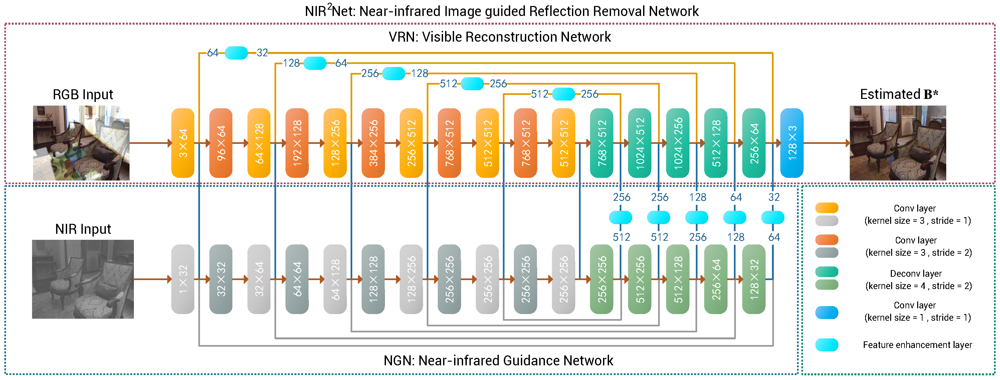
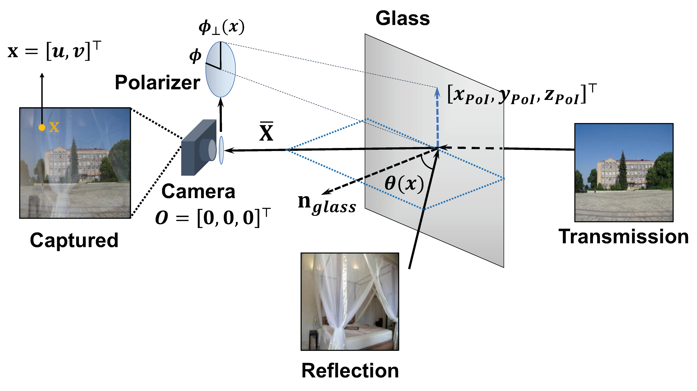

|
I am a Ph.D. student under the supervision of Prof. Boxin Shi in School of Artificial Intelligence at Beijing University of Posts and Telecommunications. Before that, I obtained my bachelor degree at Beijing University of Posts and Telecommunications in 2019. My research interests are centered around computational photography and physics-based vision. Email: youweilv AT gmail.com | youweilv AT bupt.edu.cn |

|
|
|
|  |
Yuchen Hong, Youwei Lyu, Si Li, Boxin Shi, IEEE International Conference on Multimedia & Expo (ICME), 2020 [paper] |
|  |
Youwei Lyu*, Zhaopeng Cui*, Si Li, Marc Pollefeys, Boxin Shi, Advances in Neural Information Processing Systems (NeurIPS), 2019 [paper] [code] [slides] |